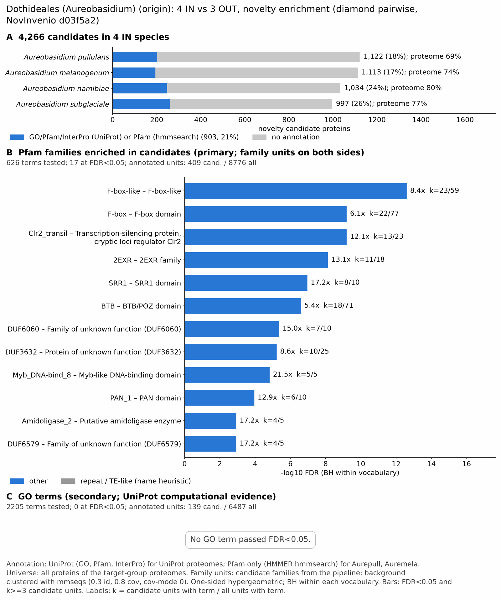

yc dothideales: functional enrichment (novelty)
One-sided hypergeometric test per term; Benjamini-Hochberg FDR within each scope, level and vocabulary. Candidates are the novelty candidates: gene families present in the IN group and absent from the OUT group. Universe: proteome. Background clustered: True (39210 sequences in 13771 clusters, mmseqs easy-cluster --min-seq-id 0.3 -c 0.8). Family level: one unit per candidate family and per background cluster.
Sources: Pfam: 2026-01-27-Pfam38.2; InterPro entries: 110.0; GO: releases/2026-07-26; analysis generated 2026-10-24T14:33:18. Source tables: /bigdata/stajichlab/jstajich/projects/NovInvenio_Investigations/studies/fungi/yeast_convergence/yc_dothideales/analysis/enrichment/outputs/proteome_clustered.
Full record: PROVENANCE. Run report: report.html.
- Annotation provenance is not fully recorded: PROVENANCE.yaml lists the per-species annotation files and their checksums, but not the UniProt release they come from.
- GO results are secondary. GO annotations include computational evidence (IEA, IBA); the GO evidence column shows if a term has non-IEA support.
- Candidate families (pipeline clustering of candidates) and background clusters (mmseqs clustering of the background proteome) are made by different runs, so family-level counts are not fully comparable.
- Low annotation: the candidate set has less than 50% annotation for Pfam 17.4%, InterPro 11.9%, GO 4.4%, any vocabulary 21.2%. Enrichment for these vocabularies has low power.
- GO and InterPro cover only 2 of 4 species: Aurenami, Auresubg. No GO and InterPro annotation for Aurepull, Auremela; these species add no units to the GO and InterPro tests, so those results describe the covered species only.
Summary figure

Annotation coverage
Fraction of proteins with at least one term per vocabulary. Universe = all proteins of the species; candidates = the candidate set.
| Species | Set | Proteins | Pfam | Pfam clan | InterPro | GO | Any |
|---|---|---|---|---|---|---|---|
| Aurepull | universe | 11844 | 69.1% | 57.0% | 0.0% | 0.0% | 69.1% |
| Aurepull | candidates | 1122 | 18.0% | 13.1% | 0.0% | 0.0% | 18.0% |
| Auremela | universe | 10582 | 73.7% | 60.5% | 0.0% | 0.0% | 73.7% |
| Auremela | candidates | 1113 | 17.4% | 12.5% | 0.0% | 0.0% | 17.4% |
| Aurenami | universe | 10258 | 74.9% | 61.3% | 79.7% | 65.6% | 79.8% |
| Aurenami | candidates | 1034 | 16.8% | 11.0% | 23.9% | 9.1% | 23.9% |
| Auresubg | universe | 10792 | 71.7% | 58.9% | 76.8% | 63.2% | 77.0% |
| Auresubg | candidates | 997 | 17.3% | 12.0% | 26.1% | 9.5% | 26.1% |
| ALL_IN | universe | 43476 | 72.2% | 59.3% | 37.9% | 31.2% | 74.7% |
| ALL_IN | candidates | 4266 | 17.4% | 12.2% | 11.9% | 4.4% | 21.2% |
Tests summary
Per vocabulary: terms with FDR < 0.05 / terms tested. Protein level counts proteins; family level counts candidate families and background clusters.
| Scope | Level | Cand. units | Pfam sig / tested | Pfam clan sig / tested | InterPro sig / tested | GO sig / tested |
|---|---|---|---|---|---|---|
| whole_set | family | 2300 | 17 / 626 | 7 / 270 | 12 / 933 | 0 / 2205 |
| whole_set | protein | 4266 | 69 / 1878 | 22 / 421 | 24 / 2102 | 1 / 3174 |
| Auremela | family | 1067 | 8 / 436 | 3 / 236 | 0 / 0 (not_available_no_annotated_units) | 0 / 0 (not_available_no_annotated_units) |
| Auremela | protein | 1113 | 9 / 546 | 3 / 255 | 0 / 0 (not_available_no_annotated_units) | 0 / 0 (not_available_no_annotated_units) |
| Aurenami | family | 1002 | 4 / 305 | 4 / 236 | 7 / 768 | 0 / 2086 |
| Aurenami | protein | 1034 | 3 / 404 | 4 / 252 | 7 / 997 | 0 / 2260 |
| Aurepull | family | 1079 | 6 / 458 | 3 / 241 | 0 / 0 (not_available_no_annotated_units) | 0 / 0 (not_available_no_annotated_units) |
| Aurepull | protein | 1122 | 5 / 575 | 2 / 260 | 0 / 0 (not_available_no_annotated_units) | 0 / 0 (not_available_no_annotated_units) |
| Auresubg | family | 979 | 5 / 313 | 2 / 236 | 9 / 778 | 0 / 2101 |
| Auresubg | protein | 997 | 4 / 418 | 1 / 253 | 9 / 1009 | 0 / 2254 |
Top 25 Pfam terms (whole set, family level)
25 rows shown, ordered by FDR then p-value; 17 have FDR < 0.05 (bold).
| Term | Name | k / N cand. | n / M bg | Fold | FDR (BH) |
|---|---|---|---|---|---|
| PF12937 | F-box-like: F-box-like | 23 / 409 | 59 / 8776 | 8.365 | 2.47e-13 |
| PF00646 | F-box: F-box domain | 22 / 409 | 77 / 8776 | 6.131 | 6.33e-10 |
| PF16761 | Clr2_transil: Transcription-silencing protein, cryptic loci regulator Clr2 | 13 / 409 | 23 / 8776 | 12.128 | 6.33e-10 |
| PF20150 | 2EXR: 2EXR family | 11 / 409 | 18 / 8776 | 13.113 | 7.32e-09 |
| PF07985 | SRR1: SRR1 domain | 8 / 409 | 10 / 8776 | 17.166 | 1.08e-07 |
| PF00651 | BTB: BTB/POZ domain | 18 / 409 | 71 / 8776 | 5.44 | 2.46e-07 |
| PF19535 | DUF6060: Family of unknown function (DUF6060) | 7 / 409 | 10 / 8776 | 15.02 | 4.31e-06 |
| PF12311 | DUF3632: Protein of unknown function (DUF3632) | 10 / 409 | 25 / 8776 | 8.583 | 5.91e-06 |
| PF22980 | Myb_DNA-bind_8: Myb-like DNA-binding domain | 5 / 409 | 5 / 8776 | 21.457 | 1.49e-05 |
| PF00024 | PAN_1: PAN domain | 6 / 409 | 10 / 8776 | 12.874 | 1.11e-04 |
| PF12224 | Amidoligase_2: Putative amidoligase enzyme | 4 / 409 | 5 / 8776 | 17.166 | 0.001 |
| PF20219 | DUF6579: Family of unknown function (DUF6579) | 4 / 409 | 5 / 8776 | 17.166 | 0.001 |
| PF20253 | DUF6604: Family of unknown function (DUF6604) | 4 / 409 | 7 / 8776 | 12.261 | 0.007 |
| PF24864 | DUF7730: Domain of unknown function (DUF7730) | 6 / 409 | 21 / 8776 | 6.131 | 0.013 |
| PF01679 | Pmp3: Proteolipid membrane potential modulator | 4 / 409 | 9 / 8776 | 9.537 | 0.020 |
| PF04146 | YTH: YT521-B-like domain | 3 / 409 | 5 / 8776 | 12.874 | 0.034 |
| PF08313 | SCA7: SCA7, zinc-binding domain | 3 / 409 | 5 / 8776 | 12.874 | 0.034 |
| PF10528 | GLEYA: GLEYA domain | 4 / 409 | 12 / 8776 | 7.152 | 0.057 |
| PF24800 | DUF7702: Domain of unknown function (DUF7702) | 3 / 409 | 6 / 8776 | 10.729 | 0.057 |
| PF24852 | DUF7726: Domain of unknown function (DUF7726) | 3 / 409 | 6 / 8776 | 10.729 | 0.057 |
| PF05730 | CFEM: CFEM domain | 4 / 409 | 13 / 8776 | 6.602 | 0.071 |
| PF01828 | Peptidase_A4: Peptidase A4 family | 3 / 409 | 7 / 8776 | 9.196 | 0.083 |
| PF07929 | PRiA4_ORF3: Plasmid pRiA4b ORF-3-like protein | 3 / 409 | 7 / 8776 | 9.196 | 0.083 |
| PF08592 | Anthrone_oxy: Anthrone oxygenase | 3 / 409 | 8 / 8776 | 8.046 | 0.123 |
| PF14295 | PAN_4: PAN domain | 4 / 409 | 16 / 8776 | 5.364 | 0.135 |
Top 25 InterPro terms (whole set, family level)
25 rows shown, ordered by FDR then p-value; 12 have FDR < 0.05 (bold).
| Term | Name | k / N cand. | n / M bg | Fold | FDR (BH) |
|---|---|---|---|---|---|
| IPR036047 | Homologous_superfamily:F-box-like domain superfamily | 25 / 385 | 71 / 8154 | 7.457 | 4.17e-13 |
| IPR001810 | Domain:F-box domain | 24 / 385 | 72 / 8154 | 7.06 | 3.43e-12 |
| IPR032675 | Homologous_superfamily:Leucine-rich repeat domain superfamily | 23 / 385 | 69 / 8154 | 7.06 | 8.47e-12 |
| IPR038883 | Family:Uncharacterized protein AN11006-like | 15 / 385 | 37 / 8154 | 8.586 | 8.33e-09 |
| IPR031915 | Domain:Cryptic loci regulator 2, N-terminal | 8 / 385 | 14 / 8154 | 12.102 | 1.00e-05 |
| IPR003609 | Domain:PAN/Apple domain | 8 / 385 | 20 / 8154 | 8.472 | 2.73e-04 |
| IPR011333 | Homologous_superfamily:SKP1/BTB/POZ domain superfamily | 14 / 385 | 68 / 8154 | 4.36 | 3.44e-04 |
| IPR045702 | Domain:Domain of unknown function DUF6060 | 5 / 385 | 7 / 8154 | 15.128 | 5.18e-04 |
| IPR012942 | Domain:SRR1-like domain | 4 / 385 | 5 / 8154 | 16.943 | 0.002 |
| IPR022085 | Family:Oxopyrrolidines biosynthesis cluster protein G | 6 / 385 | 15 / 8154 | 8.472 | 0.003 |
| IPR000210 | Domain:BTB/POZ domain | 10 / 385 | 48 / 8154 | 4.412 | 0.005 |
| IPR001245 | Domain:Serine-threonine/tyrosine-protein kinase, catalytic domain | 4 / 385 | 8 / 8154 | 10.59 | 0.023 |
| IPR013243 | Domain:SCA7 domain | 3 / 385 | 5 / 8154 | 12.708 | 0.070 |
| IPR053204 | Family:Oxopyrrolidines Biosynthesis-associated Protein | 4 / 385 | 12 / 8154 | 7.06 | 0.119 |
| IPR000612 | Family:Proteolipid membrane potential modulator | 3 / 385 | 7 / 8154 | 9.077 | 0.164 |
| IPR008266 | Active_site:Tyrosine-protein kinase, active site | 3 / 385 | 7 / 8154 | 9.077 | 0.164 |
| IPR017956 | Conserved_site:AT hook, DNA-binding motif | 3 / 385 | 7 / 8154 | 9.077 | 0.164 |
| IPR051694 | 3 / 385 | 7 / 8154 | 9.077 | 0.164 | |
| IPR018871 | Domain:GLEYA adhesin domain | 3 / 385 | 8 / 8154 | 7.942 | 0.228 |
| IPR037524 | Domain:PA14/GLEYA domain | 3 / 385 | 8 / 8154 | 7.942 | 0.228 |
| IPR046347 | Homologous_superfamily:Basic-leucine zipper domain superfamily | 5 / 385 | 25 / 8154 | 4.236 | 0.247 |
| IPR002893 | Domain:Zinc finger, MYND-type | 4 / 385 | 17 / 8154 | 4.983 | 0.303 |
| IPR051678 | Family:Aminoglycoside Phosphotransferase Enzymes | 4 / 385 | 21 / 8154 | 4.034 | 0.627 |
| IPR012912 | Domain:Plasmid pRiA4b, Orf3-like domain | 2 / 385 | 5 / 8154 | 8.472 | 0.674 |
| IPR013901 | Family:Anthrone oxygenase | 2 / 385 | 5 / 8154 | 8.472 | 0.674 |
Top 15 GO terms (whole set, family level) — secondary, computational evidence (IEA/IBA) included
15 rows shown, ordered by FDR then p-value; 0 have FDR < 0.05 (bold).
| Term | Name | k / N cand. | n / M bg | Fold | FDR (BH) | GO evidence | Families with non-IEA |
|---|---|---|---|---|---|---|---|
| GO:0005199 | molecular_function:structural constituent of cell wall | 3 / 139 | 9 / 6487 | 15.556 | 1.000 | IEA_only | 0 |
| GO:0003700 | molecular_function:DNA-binding transcription factor activity | 17 / 139 | 394 / 6487 | 2.014 | 1.000 | IEA_only | 0 |
| GO:0040020 | biological_process:regulation of meiotic nuclear division | 2 / 139 | 5 / 6487 | 18.668 | 1.000 | IEA_only | 0 |
| GO:0045835 | biological_process:negative regulation of meiotic nuclear division | 2 / 139 | 5 / 6487 | 18.668 | 1.000 | IEA_only | 0 |
| GO:0051598 | biological_process:meiotic recombination checkpoint signaling | 2 / 139 | 5 / 6487 | 18.668 | 1.000 | IEA_only | 0 |
| GO:0071944 | cellular_component:cell periphery | 3 / 139 | 16 / 6487 | 8.75 | 1.000 | IEA_only | 0 |
| GO:0140110 | molecular_function:transcription regulator activity | 18 / 139 | 444 / 6487 | 1.892 | 1.000 | IEA_only | 0 |
| GO:0000160 | biological_process:phosphorelay signal transduction system | 2 / 139 | 6 / 6487 | 15.556 | 1.000 | IEA_only | 0 |
| GO:0000123 | cellular_component:histone acetyltransferase complex | 4 / 139 | 36 / 6487 | 5.185 | 1.000 | IEA_only | 0 |
| GO:0000124 | cellular_component:SAGA complex | 3 / 139 | 19 / 6487 | 7.369 | 1.000 | IEA_only | 0 |
| GO:0070461 | cellular_component:SAGA-type complex | 3 / 139 | 20 / 6487 | 7.0 | 1.000 | IEA_only | 0 |
| GO:0070192 | biological_process:chromosome organization involved in meiotic cell cycle | 2 / 139 | 7 / 6487 | 13.334 | 1.000 | IEA_only | 0 |
| GO:0016310 | biological_process:phosphorylation | 2 / 139 | 8 / 6487 | 11.667 | 1.000 | IEA_only | 0 |
| GO:0031048 | biological_process:regulatory ncRNA-mediated heterochromatin formation | 2 / 139 | 8 / 6487 | 11.667 | 1.000 | IEA_only | 0 |
| GO:0033313 | biological_process:meiotic cell cycle checkpoint signaling | 2 / 139 | 8 / 6487 | 11.667 | 1.000 | IEA_only | 0 |
Actin cytoskeleton controls
Known actin-related families and how many of their proteins pass each filter. Protein ID columns are left out.
| control | pfam_ids | desc_regex | IN_universe | IN_in_matrix | IN_pass_ingroup_rule | candidates | near_miss_out1 | near_miss_out2 | n_Aurepull | n_Auremela | n_Aurenami | n_Auresubg | n_Botrdoth | n_Paranodo | n_Altealte |
|---|---|---|---|---|---|---|---|---|---|---|---|---|---|---|---|
| Arp2/3 ARPC2 (P34-Arc) | PF04045 | 4 | 4 | 4 | 0 | 0 | 0 | 1 | 1 | 1 | 1 | 1 | 1 | 1 | |
| Arp2/3 ARPC3 (P21-Arc) | PF04062 | 4 | 4 | 4 | 0 | 0 | 0 | 1 | 1 | 1 | 1 | 1 | 1 | 1 | |
| Arp2/3 ARPC4 | PF05856 | 4 | 4 | 4 | 0 | 0 | 0 | 1 | 1 | 1 | 1 | 1 | 1 | 1 | |
| Arp2/3 ARPC5 (P16-Arc) | PF04699 | 4 | 4 | 4 | 0 | 0 | 0 | 1 | 1 | 1 | 1 | 1 | 1 | 1 | |
| Arp2/3 ARPC1 (description only) | arp2/3 complex.*(41|p41|subunit 1)|ARPC1 | 0 | 0 | 0 | 0 | 0 | 0 | 0 | 0 | 0 | 0 | 0 | 0 | 0 | |
| Arp2 / Arp3 (description only) | actin-related protein (2|3)\b|\bARP[23]\b | 21 | 21 | 21 | 0 | 0 | 0 | 4 | 4 | 6 | 7 | 7 | 6 | 5 | |
| WAVE complex NCKAP1 | PF09735 | 0 | 0 | 0 | 0 | 0 | 0 | 0 | 0 | 0 | 0 | 0 | 0 | 0 | |
| WAVE complex CYFIP (FragX_IP) | PF05994 | 0 | 0 | 0 | 0 | 0 | 0 | 0 | 0 | 0 | 0 | 0 | 0 | 0 | |
| WAVE complex ABI | PF07815|PF27594 | 0 | 0 | 0 | 0 | 0 | 0 | 0 | 0 | 0 | 0 | 0 | 0 | 0 | |
| SCAR/WAVE (SCAR_helical) | PF27569 | 0 | 0 | 0 | 0 | 0 | 0 | 0 | 0 | 0 | 0 | 0 | 0 | 0 | |
| WASP family (WH1) | PF00568 | 4 | 4 | 4 | 0 | 0 | 0 | 1 | 1 | 1 | 1 | 1 | 1 | 1 | |
| WH2 motif (WASP, WAVE, others) | PF02205 | 10 | 10 | 10 | 0 | 0 | 0 | 2 | 2 | 3 | 3 | 3 | 2 | 3 | |
| Formin FH2 | PF02181 | 4 | 4 | 4 | 0 | 0 | 0 | 1 | 1 | 1 | 1 | 1 | 1 | 1 | |
| Formin Drf_GBD / Drf_FH3 / Drf_DAD | PF06371|PF06367|PF06345 | 8 | 8 | 8 | 0 | 0 | 0 | 2 | 2 | 2 | 2 | 2 | 2 | 2 | |
| Ena/VASP (VASP_tetra) | PF08776 | 0 | 0 | 0 | 0 | 0 | 0 | 0 | 0 | 0 | 0 | 0 | 0 | 0 | |
| Coronin (description only) | coronin | 3 | 3 | 3 | 0 | 0 | 0 | 1 | 0 | 1 | 1 | 1 | 1 | 1 | |
| Cortactin (HS1_rep) | PF02218 | 0 | 0 | 0 | 0 | 0 | 0 | 0 | 0 | 0 | 0 | 0 | 0 | 0 | |
| Myosin 2 tail (Myosin_tail_1) | PF01576 | 0 | 0 | 0 | 0 | 0 | 0 | 0 | 0 | 0 | 0 | 0 | 0 | 0 | |
| Myosin head (all myosins) | PF00063 | 16 | 16 | 16 | 0 | 0 | 0 | 4 | 4 | 4 | 4 | 4 | 4 | 3 |
Page written by bin/generate_enrichment_page.py.